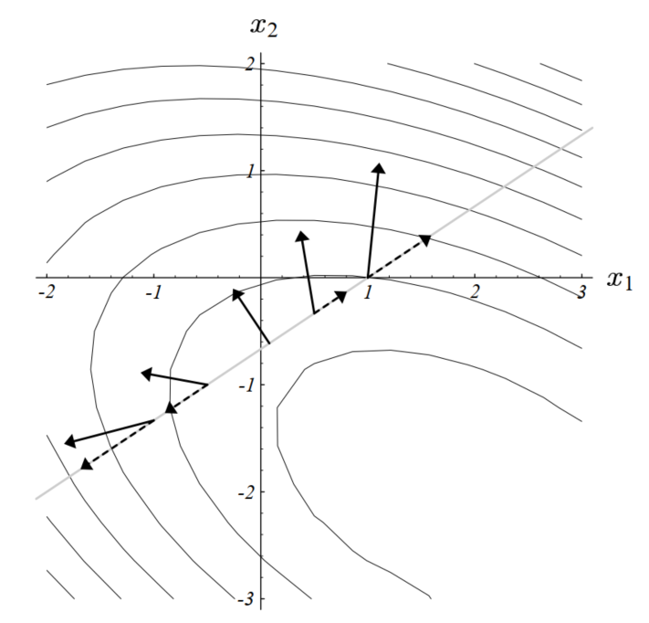

<!DOCTYPE html>
<html lang="en">

<head>
  <meta charset="utf-8" />
    
  <meta name="description" content="Bowen&#39;s Blog" />
  
  <meta name="viewport" content="width=device-width, initial-scale=1, maximum-scale=1" />
  <title>
    CAPCG 复盘 |  Bowen&#39;s Blog
  </title>
  <meta name="generator" content="hexo-theme-yilia-plus">
  
  <link rel="shortcut icon" href="/logo.ico" />
  
  
<link rel="stylesheet" href="/css/main.css">

  
  <script src="https://cdn.jsdelivr.net/npm/pace-js@1.0.2/pace.min.js"></script>
  
  

  

<link rel="alternate" href="/atom.xml" title="Bowen's Blog" type="application/atom+xml">
</head>

</html>

<body>
  <div id="app">
    <main class="content">
      <section class="outer">
  <article id="post-CAPCG-复盘" class="article article-type-post" itemscope
  itemprop="blogPost" data-scroll-reveal>

  <div class="article-inner">
    
    <header class="article-header">
       
<h1 class="article-title sea-center" style="border-left:0" itemprop="name">
  CAPCG 复盘
</h1>
  

    </header>
    

    
    <div class="article-meta">
      <a href="/2020/03/22/CAPCG-%E5%A4%8D%E7%9B%98/" class="article-date">
  <time datetime="2020-03-22T04:28:00.000Z" itemprop="datePublished">2020-03-22</time>
</a>
      
  <div class="article-category">
    <a class="article-category-link" href="/categories/%E5%A4%8D%E7%9B%98/">复盘</a>
  </div>

      
      
<div class="word_count">
    <span class="post-time">
        <span class="post-meta-item-icon">
            <i class="ri-quill-pen-line"></i>
            <span class="post-meta-item-text"> 字数统计:</span>
            <span class="post-count">1.4k字</span>
        </span>
    </span>

    <span class="post-time">
        &nbsp; | &nbsp;
        <span class="post-meta-item-icon">
            <i class="ri-book-open-line"></i>
            <span class="post-meta-item-text"> 阅读时长≈</span>
            <span class="post-count">5分钟</span>
        </span>
    </span>
</div>

      
    </div>
    

    
    
    <div class="tocbot"></div>


    

    
    <div class="article-entry" itemprop="articleBody">
      
      

      
      <h1 id="CAPCG-复盘"><a href="#CAPCG-复盘" class="headerlink" title="CAPCG 复盘"></a>CAPCG 复盘</h1><h2 id="PCG-简介"><a href="#PCG-简介" class="headerlink" title="PCG 简介"></a>PCG 简介</h2><p>预处理共轭梯度法 (Preconditioned Conjugate Gradient) 从共轭梯度法 (Conjugate Gradient) 衍生而来，是常用的用于求解线性方程组 $Ax = b$ 的数值解法，目前主要应用于数值计算领域。</p>
<h3 id="Conjugate-Gradient"><a href="#Conjugate-Gradient" class="headerlink" title="Conjugate Gradient"></a>Conjugate Gradient</h3><p>共轭梯度法主要适用于系数矩阵 $A$ 较为稀疏的情况下。如果矩阵 $A$ 不是稀疏的，那么最好的求解方法是对系数矩阵进行分解，这样也可以快速对不同的 $b$ 求得答案，在系数矩阵很大而且稀疏的情况下，分解产生的矩阵可能含有比 $A$ 更多的非零元素，并且在时间和空间上均不具有优势，所以使用迭代法是一种较好的选择。</p>
<a id="more"></a>

<h4 id="引理-1"><a href="#引理-1" class="headerlink" title="引理 1"></a>引理 1</h4><p>我们称</p>
<p>$$<br>f(x) = \frac{1}{2}x^{T}Ax - b^Tx + c<br>$$</p>
<p>是一个二次型，这是一个标量，其中 $A$ 是系数矩阵，$x$ 和 $b$ 均为向量，$c$ 为常数。</p>
<p>下面将说明如果 $A$ 是一个对称正定矩阵，那么 $f(x)$ 将在 $Ax = b$ 的解处取到最小值。</p>
<p>如果 $A$ 是对称正定矩阵，那么 $f(x)$ 的图像是一个碗状抛物面（有最小值且最小值唯一），我们可以看出：</p>
<p>$$<br>\begin{aligned}<br>\nabla^{2} f(x) &amp;=\frac{1}{2} A^{T}+\frac{1}{2} A \<br>&amp;=A<br>\end{aligned}<br>$$</p>
<p>$f(x)$ 的 hessian 矩阵是正定的，那么根据凸函数的二阶充分必要条件，$f(x)$ 是严格凸函数，有最小值且最小值唯一（当然也可以用朴素的方法证明 $x = A^{-1}b$ 处有唯一最小值）。</p>
<p>所以 $f(x)$ 可以在梯度为 0 处取到最小值：<br>$$<br>\begin{aligned}<br>\nabla f(x) &amp;=\frac{1}{2} A^{T}x+\frac{1}{2} Ax - b \<br>&amp;=Ax - b = 0<br>\end{aligned}<br>$$<br>这也就证明了引理，即如果 $A$ 是一个对称正定矩阵，那么 $f(x)$ 将在 $Ax = b$ 的解处取到最小值（注意如果 $A$ 不是对称的，那么将会在 $\frac{1}{2}(A^T+A)x=b$ 处取到最小值）。</p>
<h4 id="最速梯度法-Steepest-Descent"><a href="#最速梯度法-Steepest-Descent" class="headerlink" title="最速梯度法 (Steepest Descent)"></a>最速梯度法 (Steepest Descent)</h4><p>首先定义误差向量 $\mathbf{e_{(i)}} = \mathbf{x_{(i)}} - \mathbf{x}$，这个向量衡量了目前解到正确解的距离。然后定义残差向量 $\mathbf{r_{(i)}} = \mathbf{b} - A\mathbf{x_{(i)}}$，这个向量衡量 $A\mathbf{x_{(i)}}$ 与期望值 $\mathbf{b}$ 之间的误差。注意，我们可以看出 $\mathbf{r_{(i)}} = -A\mathbf{e_{(i)}}$，这可以看作是误差通过线性变换之后到了和 $\mathbf{b}$ 相同的空间中。并且根据上文中 $\nabla f(\mathbf{x}) |<em>{\mathbf{x} = \mathbf{x</em>{(i)}}} = A\mathbf{x_{(i)}} - \mathbf{b}$ ，可以发现 $\mathbf{r_{(i)}} = -\nabla f(\mathbf{x}) |<em>{\mathbf{x}= \mathbf{x</em>{(i)}}}$ ，而这对应了梯度的反方向，也就是函数 $f(\mathbf{x})$ 下降最快的方向，所以以后我们会将残差和函数梯度下降最快的方向对应起来。</p>
<p>使用最速梯度法，从任意位置出发，我们可以通过迭代到达 $f(x)$ 的最小值点，迭代每次选取的方向是与梯度相反的方向（梯度是函数增长最快的方向），使用公式：</p>
<p>$$<br>\mathbf{x_{(i+1)}} = \mathbf{x_{(i)}} + \alpha \mathbf{r_{i}}<br>$$</p>
<p>其中 $\alpha$ 是步长，那么如何决定步长呢？</p>
<p>我们希望每次在残差的方向上的走一步之后尽可能使 $f$ 接近最小值，所以:</p>
<p>$$<br>\begin{aligned}<br>\frac{d}{d \alpha} f\left(\mathbf{x_{(i+1)}}\right) &amp;= (\frac{d f}{d \mathbf{x_{i+1}}})^T \frac{d \mathbf{x_{i+1}}}{d \alpha}\<br>&amp;= -\mathbf{r_{i+1}}^T r_{i} = 0<br>\end{aligned}<br>$$</p>
<p>这样我们可以看出需要 ${r_{i+1}}, r_{i}$ 相互正交，我们也可以来看一下两次搜索方向相互正交的几何含义：</p>
<p></p>
<p>实线方向即为本次搜索的方向（本次的梯度反方向），我们希望本次搜索到达的这条线上离最小值最近的点，这个点的特征是它的梯度（下次搜索方向）与本次搜索的方向（本次梯度）垂直。如果不垂直（比如直线上的其他点），我们可以按照梯度在直线上投影（虚线）的反方向继续往前走，可以达到更小的值（因为梯度的反方向是函数值变小的方向），以上就是一点 intuition。</p>
<p>进一步推导：</p>
<p>$$\begin{aligned}<br>r_{(i+1)}^{T} r_{(i)} &amp;=0 \<br>\left(b-A x_{(i+1)}\right)^{T} r_{(i)} &amp;=0 \<br>\left(b-A\left(x_{(i)}+\alpha r_{(i)}\right)\right)^{T} r_{(i)} &amp;=0 \<br>\left(b-A x_{(i)}\right)^{T} r_{(i)}-\alpha\left(A r_{(i)}\right)^{T} r_{(i)} &amp;=0 \<br>\left(b-A x_{(i)}\right)^{T} r_{(i)} &amp;=\alpha\left(A r_{(i)}\right)^{T} r_{(i)} \<br>r_{(i)}^{T} r_{(i)} &amp;=\alpha r_{(i)}^{T}\left(A r_{(i)}\right) \<br>\alpha &amp;=\frac{r_{(i)}^{T} r_{(i)}}{r_{(i)}^{T} A r_{(i)}}<br>\end{aligned}$$</p>
<p>总结上述过程可以得到：</p>
<p>$$\begin{aligned}<br>r_{(i)} &amp;=b-A x_{(i)} \<br>\alpha_{(i)} &amp;=\frac{r_{(i)}^{T} r_{(i)}}{r_{(i)}^{T} A r_{(i)}} \<br>x_{(i+1)} &amp;=x_{(i)}+\alpha_{(i)} r_{(i)}<br>\end{aligned}$$</p>
<p>这就是最速下降法的迭代公式，我们也可以将最后一个公式两侧同时乘 $-A$ 再加上 $b$，得到：</p>
<p>$$r_{(i+1)}=r_{(i)}-\alpha_{(i)} A r_{(i)}$$</p>
<p>我们可以通过最后三个式子迭代直到收敛，这样做比较方便，但有由于 $r$ 每次的迭代都没有 $x$ 的反馈，有可能最后存在一定的误差（浮点数计算误差），我们可以通过周期性用 $r_{(i)} =b-A x_{(i)}$ 更新 $r_{(i)}$ 来校正误差。</p>
<!-- ## 性能分析

使用 Intel Parallel Studio 对原始代码进行性能分析，结果如下：

 -->
      
      <!-- reward -->
      
      <div id="reward-btn">
        打赏
      </div>
      
    </div>
    
    
      <!-- copyright -->
      
        <div class="declare">
          <ul class="post-copyright">
            <li>
              <i class="ri-copyright-line"></i>
              <strong>版权声明： </strong s>
              本博客所有文章除特别声明外，均采用 <a href="https://www.apache.org/licenses/LICENSE-2.0.html" rel="external nofollow"
                target="_blank">Apache License 2.0</a> 许可协议。转载请注明出处！
            </li>
          </ul>
        </div>
        
    <footer class="article-footer">
      
          
<div class="share-btn">
      <span class="share-sns share-outer">
        <i class="ri-share-forward-line"></i>
        分享
      </span>
      <div class="share-wrap">
        <i class="arrow"></i>
        <div class="share-icons">
          
          <a class="weibo share-sns" href="javascript:;" data-type="weibo">
            <i class="ri-weibo-fill"></i>
          </a>
          <a class="weixin share-sns wxFab" href="javascript:;" data-type="weixin">
            <i class="ri-wechat-fill"></i>
          </a>
          <a class="qq share-sns" href="javascript:;" data-type="qq">
            <i class="ri-qq-fill"></i>
          </a>
          <a class="douban share-sns" href="javascript:;" data-type="douban">
            <i class="ri-douban-line"></i>
          </a>
          <!-- <a class="qzone share-sns" href="javascript:;" data-type="qzone">
            <i class="icon icon-qzone"></i>
          </a> -->
          
          <a class="facebook share-sns" href="javascript:;" data-type="facebook">
            <i class="ri-facebook-circle-fill"></i>
          </a>
          <a class="twitter share-sns" href="javascript:;" data-type="twitter">
            <i class="ri-twitter-fill"></i>
          </a>
          <a class="google share-sns" href="javascript:;" data-type="google">
            <i class="ri-google-fill"></i>
          </a>
        </div>
      </div>
</div>

<div class="wx-share-modal">
    <a class="modal-close" href="javascript:;"><i class="ri-close-circle-line"></i></a>
    <p>扫一扫，分享到微信</p>
    <div class="wx-qrcode">
      
    </div>
</div>

<div id="share-mask"></div>
      
      
  <ul class="article-tag-list" itemprop="keywords"><li class="article-tag-list-item"><a class="article-tag-list-link" href="/tags/Optimization/" rel="tag">Optimization</a></li></ul>


    </footer>

  </div>

  
  
  <nav class="article-nav">
    
    
      <a href="/2020/03/20/BERT-illustration/" class="article-nav-link">
        <strong class="article-nav-caption">下一篇</strong>
        <div class="article-nav-title">BERT-illustration</div>
      </a>
    
  </nav>


  

  
  
<!-- valine评论 -->
<div id="vcomments-box">
    <div id="vcomments">
    </div>
</div>
<script src="//cdn1.lncld.net/static/js/3.0.4/av-min.js"></script>
<script src='https://cdn.jsdelivr.net/npm/valine@1.3.10/dist/Valine.min.js'></script>
<script>
    new Valine({
        el: '#vcomments',
        app_id: '',
        app_key: '',
        path: window.location.pathname,
        notify: 'false',
        verify: 'false',
        avatar: 'mp',
        placeholder: '给我的文章加点评论吧~',
        recordIP: true
    });
    const infoEle = document.querySelector('#vcomments .info');
    if (infoEle && infoEle.childNodes && infoEle.childNodes.length > 0) {
        infoEle.childNodes.forEach(function (item) {
            item.parentNode.removeChild(item);
        });
    }
</script>
<style>
    #vcomments-box {
        padding: 5px 30px;
    }

    @media screen and (max-width: 800px) {
        #vcomments-box {
            padding: 5px 0px;
        }
    }

    #vcomments-box #vcomments {
        background-color: #fff;
    }

    .v .vlist .vcard .vh {
        padding-right: 20px;
    }

    .v .vlist .vcard {
        padding-left: 10px;
    }
</style>

  

  
  
  

</article>
</section>
      <footer class="footer">
  <div class="outer">
    <ul class="list-inline">
      <li>
        &copy;
        2020
        Bowen
      </li>
      <li>
        
        Powered by
        
        
        <a href="https://hexo.io" target="_blank">Hexo</a> Theme <a href="https://github.com/Shen-Yu/hexo-theme-ayer" target="_blank">Ayer</a>
        
      </li>
    </ul>
    <ul class="list-inline">
      <li>
        
      </li>
      
      <li>
        <!-- cnzz统计 -->
        
      </li>
    </ul>
  </div>
</footer>
      <div class="to_top">
        <div class="totop" id="totop">
  <i class="ri-arrow-up-line"></i>
</div>
      </div>
    </main>
    <aside class="sidebar">
      <button class="navbar-toggle"></button>
<nav class="navbar">
  
  <div class="logo">
    <a href="/"></a>
  </div>
  
  <ul class="nav nav-main">
    
    <li class="nav-item">
      <a class="nav-item-link" href="/">主页</a>
    </li>
    
    <li class="nav-item">
      <a class="nav-item-link" href="/archives">归档</a>
    </li>
    
    <li class="nav-item">
      <a class="nav-item-link" href="/categories">分类</a>
    </li>
    
    <li class="nav-item">
      <a class="nav-item-link" href="/tags">标签</a>
    </li>
    
    <li class="nav-item">
      <a class="nav-item-link" href="http://home.ustc.edu.cn/~zhangbowen" target="_blank" rel="noopener">关于我</a>
    </li>
    
  </ul>
</nav>
<nav class="navbar navbar-bottom">
  <ul class="nav">
    <li class="nav-item">
      
      <a class="nav-item-link nav-item-search"  title="Search">
        <i class="ri-search-line"></i>
      </a>
      
      
      <a class="nav-item-link" target="_blank" href="/atom.xml" title="RSS Feed">
        <i class="ri-rss-line"></i>
      </a>
      
    </li>
  </ul>
</nav>
<div class="search-form-wrap">
  <div class="local-search local-search-plugin">
  <input type="search" id="local-search-input" class="local-search-input" placeholder="Search...">
  <div id="local-search-result" class="local-search-result"></div>
</div>
</div>
    </aside>
    <div id="mask"></div>

<!-- #reward -->
<div id="reward">
  <span class="close"><i class="ri-close-line"></i></span>
  <p class="reward-p"><i class="ri-cup-line"></i>请我喝杯咖啡吧~</p>
  <div class="reward-box">
    
    <div class="reward-item">
      
      <span class="reward-type">支付宝</span>
    </div>
    
    
    <div class="reward-item">
      
      <span class="reward-type">微信</span>
    </div>
    
  </div>
</div>
    
<script src="/js/jquery-2.0.3.min.js"></script>


<script src="/js/share.js"></script>


<script src="/js/lazyload.min.js"></script>


<script>
  try {
    var typed = new Typed("#subtitle", {
      strings: ['没有什么会永垂不朽', '二十年后还是一样轻狂，一样不枉', '想要的都拥有，得不到的都释怀'],
      startDelay: 0,
      typeSpeed: 200,
      loop: true,
      backSpeed: 100,
      showCursor: true
    });
  } catch (err) {
  }

</script>


<script src="/js/tocbot.min.js"></script>

<script>
  // Tocbot_v4.7.0  http://tscanlin.github.io/tocbot/
  tocbot.init({
    tocSelector: '.tocbot',
    contentSelector: '.article-entry',
    headingSelector: 'h1, h2, h3, h4, h5, h6',
    hasInnerContainers: true,
    scrollSmooth: true,
    scrollContainer: 'main',
    positionFixedSelector: '.tocbot',
    positionFixedClass: 'is-position-fixed',
    fixedSidebarOffset: 'auto',
    onClick: (e) => {
      $('.toc-link').removeClass('is-active-link');
      $(`a[href=${e.target.hash}]`).addClass('is-active-link');
      $(e.target.hash).scrollIntoView();
      return false;
    }
  });
</script>


<script src="https://cdn.jsdelivr.net/npm/jquery-modal@0.9.2/jquery.modal.min.js"></script>
<link rel="stylesheet" href="https://cdn.jsdelivr.net/npm/jquery-modal@0.9.2/jquery.modal.min.css">
<script src="https://cdn.jsdelivr.net/npm/justifiedGallery@3.7.0/dist/js/jquery.justifiedGallery.min.js"></script>

<script src="/js/ayer.js"></script>


<!-- Root element of PhotoSwipe. Must have class pswp. -->
<div class="pswp" tabindex="-1" role="dialog" aria-hidden="true">

    <!-- Background of PhotoSwipe. 
         It's a separate element as animating opacity is faster than rgba(). -->
    <div class="pswp__bg"></div>

    <!-- Slides wrapper with overflow:hidden. -->
    <div class="pswp__scroll-wrap">

        <!-- Container that holds slides. 
            PhotoSwipe keeps only 3 of them in the DOM to save memory.
            Don't modify these 3 pswp__item elements, data is added later on. -->
        <div class="pswp__container">
            <div class="pswp__item"></div>
            <div class="pswp__item"></div>
            <div class="pswp__item"></div>
        </div>

        <!-- Default (PhotoSwipeUI_Default) interface on top of sliding area. Can be changed. -->
        <div class="pswp__ui pswp__ui--hidden">

            <div class="pswp__top-bar">

                <!--  Controls are self-explanatory. Order can be changed. -->

                <div class="pswp__counter"></div>

                <button class="pswp__button pswp__button--close" title="Close (Esc)"></button>

                <button class="pswp__button pswp__button--share" style="display:none" title="Share"></button>

                <button class="pswp__button pswp__button--fs" title="Toggle fullscreen"></button>

                <button class="pswp__button pswp__button--zoom" title="Zoom in/out"></button>

                <!-- Preloader demo http://codepen.io/dimsemenov/pen/yyBWoR -->
                <!-- element will get class pswp__preloader--active when preloader is running -->
                <div class="pswp__preloader">
                    <div class="pswp__preloader__icn">
                        <div class="pswp__preloader__cut">
                            <div class="pswp__preloader__donut"></div>
                        </div>
                    </div>
                </div>
            </div>

            <div class="pswp__share-modal pswp__share-modal--hidden pswp__single-tap">
                <div class="pswp__share-tooltip"></div>
            </div>

            <button class="pswp__button pswp__button--arrow--left" title="Previous (arrow left)">
            </button>

            <button class="pswp__button pswp__button--arrow--right" title="Next (arrow right)">
            </button>

            <div class="pswp__caption">
                <div class="pswp__caption__center"></div>
            </div>

        </div>

    </div>

</div>

<link rel="stylesheet" href="https://cdn.jsdelivr.net/npm/photoswipe@4.1.3/dist/photoswipe.min.css">
<link rel="stylesheet" href="https://cdn.jsdelivr.net/npm/photoswipe@4.1.3/dist/default-skin/default-skin.min.css">
<script src="https://cdn.jsdelivr.net/npm/photoswipe@4.1.3/dist/photoswipe.min.js"></script>
<script src="https://cdn.jsdelivr.net/npm/photoswipe@4.1.3/dist/photoswipe-ui-default.min.js"></script>

<script>
    function viewer_init() {
        let pswpElement = document.querySelectorAll('.pswp')[0];
        let $imgArr = document.querySelectorAll(('.article-entry img:not(.reward-img)'))

        $imgArr.forEach(($em, i) => {
            $em.onclick = () => {
                // slider展开状态
                // todo: 这样不好，后面改成状态
                if (document.querySelector('.left-col.show')) return
                let items = []
                $imgArr.forEach(($em2, i2) => {
                    let img = $em2.getAttribute('data-idx', i2)
                    let src = $em2.getAttribute('data-target') || $em2.getAttribute('src')
                    let title = $em2.getAttribute('alt')
                    // 获得原图尺寸
                    const image = new Image()
                    image.src = src
                    items.push({
                        src: src,
                        w: image.width || $em2.width,
                        h: image.height || $em2.height,
                        title: title
                    })
                })
                var gallery = new PhotoSwipe(pswpElement, PhotoSwipeUI_Default, items, {
                    index: parseInt(i)
                });
                gallery.init()
            }
        })
    }
    viewer_init()
</script>


<script type="text/x-mathjax-config">
  MathJax.Hub.Config({
      tex2jax: {
          inlineMath: [ ['$','$'], ["\\(","\\)"]  ],
          processEscapes: true,
          skipTags: ['script', 'noscript', 'style', 'textarea', 'pre', 'code']
      }
  });

  MathJax.Hub.Queue(function() {
      var all = MathJax.Hub.getAllJax(), i;
      for(i=0; i < all.length; i += 1) {
          all[i].SourceElement().parentNode.className += ' has-jax';
      }
  });
</script>

<script src="https://cdn.jsdelivr.net/npm/mathjax@2.7.6/unpacked/MathJax.js?config=TeX-AMS-MML_HTMLorMML"></script>
<script>
  var ayerConfig = {
    mathjax: true
  }
</script>


<script type="text/javascript" src="https://js.users.51.la/20544303.js"></script>

    
    <div id="music">
    
    
    
    <iframe frameborder="no" border="1" marginwidth="0" marginheight="0" width="200" height="52"
        src="//music.163.com/outchain/player?type=3&id=2063028227&auto=0&height=32"></iframe>
</div>

<style>
    #music {
        position: fixed;
        right: 15px;
        bottom: 0;
        z-index: 998;
    }
</style>
    
  </div>
</body>

</html>